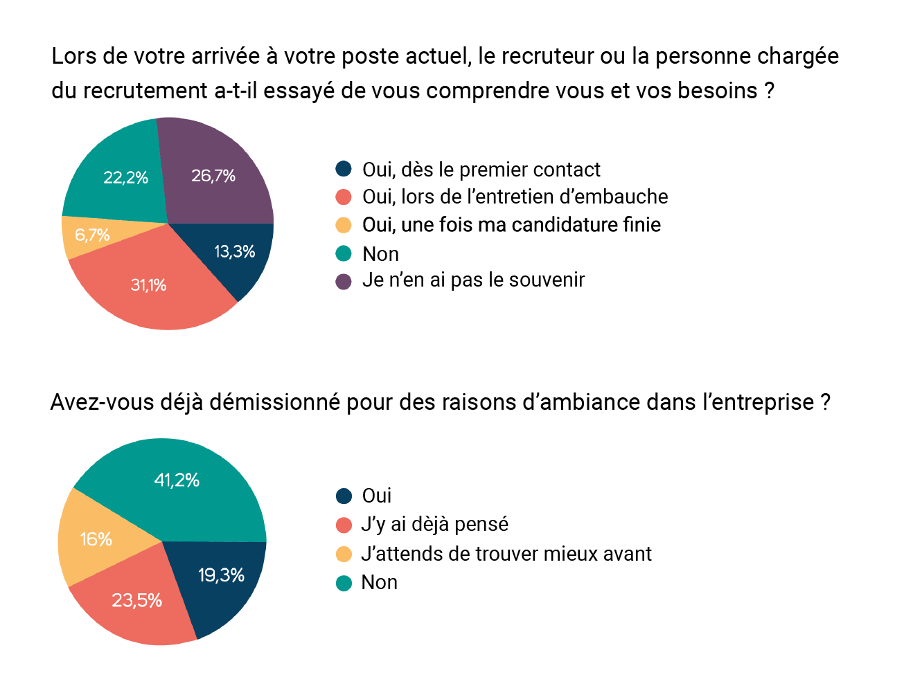
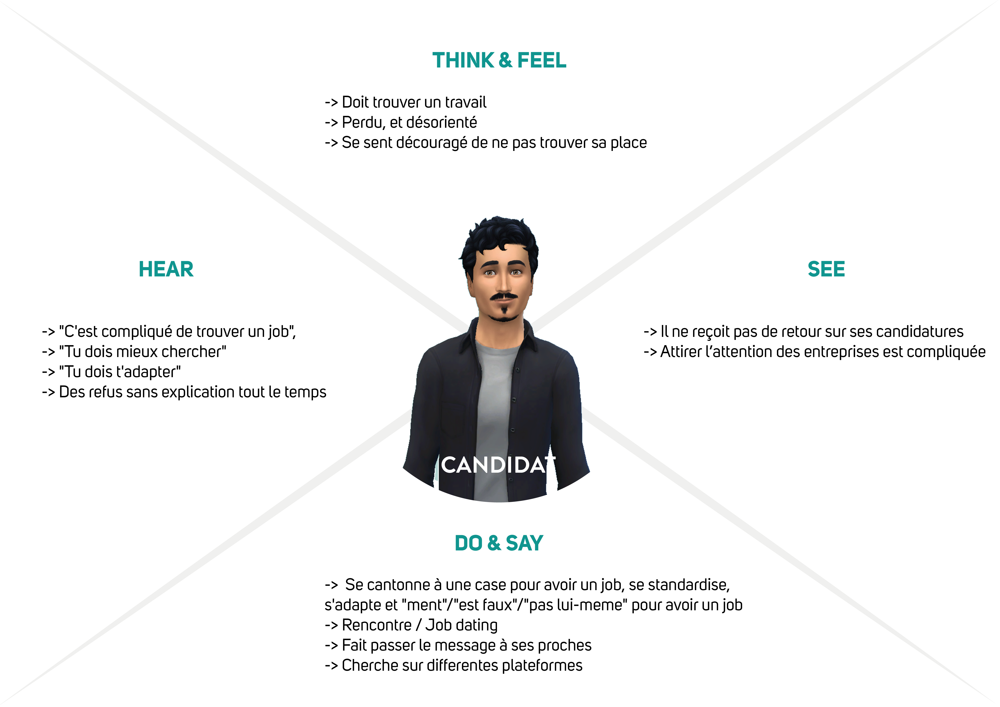
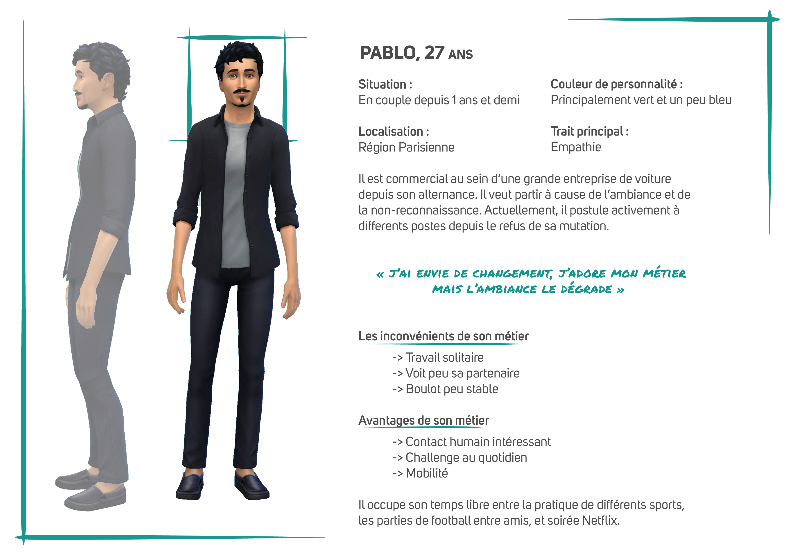

Projet de fin d’étude : For / Feelty
Activité : Design Sprint • UX design • Recherche • Card sorting • User Interview • Prototypage
Contexte : Scolaire. J’ai mené cette idée de sa conception à son développement. Quelques personnes extérieures sont intervenues sur la partie recherche, interview et test utilisateur.
Problématique : Dans le cadre de mon projet de fin d’étude, que j’ai choisi de baser sur deux de mes passions : l’entreprenariat et l’humain. J’ai fait mes recherches sur les différents aspects du recrutement que j’avais abordé précédemment lors d’un projet entrepreneurial qui prenait le parti pris sur les soft skill. Lors de cette expérience, j’ai eu l’occasion de côtoyer le recrutement dans différents environnements, cultures et avec des approches différentes. Ce sont toutes ces différentes idées qui m’ont permis d’avoir une vision macro du marché de l’expérience liée du recrutement et plus précisément aux ressources humaines. La problématique qui en a découlé est : Quelle démarche centrée sur l’utilisateur adopter pour faciliter le recrutement et le suivie de carrière au sein d’une entreprise ?
Comment j’en suis arrivée à la solution proposée ?
Mon retour sur mes expériences et les différentes interviews ont montré que le recrutement était toujours une source de stress et de doutes pour les deux parties concernées (entreprise et candidat/talent). Lors du développement de Cacti à la Silicone Valey, j’ai décidé de concevoir une expérience où l’humain serait au centre du processus. Le but est que les utilisateurs le ressentent comme un synonyme d’opportunité et non de rejet ou de jugement.
Comment les solutions proposées ont résolu le problème ?

J’ai questionné une large cible pour définir les parcours utilisateurs communs ou récurrents. À l’aide de ce sondage, j’ai pu définir les moments où les données à prendre en compte étaient faussées.
À l’aide de toutes ces recherches et en analysant aussi les solutions similaires dans le même domaine d’activité, une expérience s’est dessinée. La solution de facilité aurait été de tester des écrans pour avoir un premier retour mais l’expérience se séparant en quatre temps, dont le principal est innovant et pas à travers une interface digitale. J’ai pris le parti de faire tester cette partie principale et humaine dans des conditions réelles. Lors de ces tests, les retours ont montré que les utilisateurs avaient valorisé le côté humain, privilégié l’honnêté et que les rapports de force s’équilibrer, contrerement aux interviews des personnes qui n’avaient jamais testé cette expérience. Les utilisateurs ont senti une différence au niveau de leur discours et des émotions ressenties, ce qui leur a donné accès à plus de liberté et de naturel.
Comment le projet a affecté les utilisateurs ?
Grâce à ce processus de gestion du capital humain, les biais liés au rapport de force, stress et toute autre émotion ont diminué.
Les défis que j’ai rencontré :
Lors de l’idéation, je suis passée par plusieurs concepts qui étaient pour la grande majorité entièrement digitaux mais qui ne satisfaisaient pas complètement les besoins et les pain points soulevés. La frustration de se confronter encore à un processus inhumain, long et répétitif revenait. C’est après avoir ouvert le champs des possibles sur les différentes d’itérations et en faisant appel au design thinking avec des personnes spécialisées dans l’état d’esprit humain que la solution s’est simplifiée et humanisée.
Ce que j’ai appris :
Grâce à ce projet, j’ai réalisé l’importance d’inclure les utilisateurs dans notre processus, pour explorer de nouvelles façons de concevoir. Même si l’on se rend compte qu’un parcours 100% digital n’est pas toujours la solution.
Dates importantes :
• Fin Avril à Juin : Problématique et recherche PESTEL
• Juillet à Septembre : Recherche UX et Rédaction du mémoire
• Septembre à Décembre :réalisation, prototypage et création d’un stand pour la présentation des Grands Projets
Un peu plus de détails
Voici des extraits du mémoire de 150 pages, de recherches et de ma démarche UX qui rassemblent l’ensemble de mon savoir sur le sujet ainsi qu’une ébauche de la solution.
«Le second profil important pour comprendre la démarche est le futur collaborateur. Ce second persona s’appelle Pablo, il a 27 ans. Ce jeune est commercial au sein d’une entreprise de voiture. Il est arrivé jusqu’ici suite à son alternance qu’il a effectué dans cette même boîte. Cependant maintenant qu’il a fini ses études il aimerait avoir plus de reconnaissance pour son travail. Il est un des meilleurs commerciaux de l’entreprise et pourtant il constate qu’il n’évolue pas. Suite à de nombreuses requêtes effectuées auprès de son manager et du service ressources humaines de l’entreprise, rien ne lui a été proposé pour le garder. Il ne se sent plus à sa place et l’ambiance se dégrade à ses yeux. Il décide de postuler activement dans d’autres entreprises plus petites voire récentes afin de vraiment se sentir utile, et non pas comme un énième numéro.»
- Extrait page 56 du mémoire
 «Maintenant que nous avons abordé le profil de chacun des personnages, concentrons nous sur les démarches et processus actuels nécessaires pour être recruté ou recruter.Dans sa démarche, le candidat va commencer par définir son secteur et sa recherche : CDD, CDI, Stage, Alternance etc.. Il va préparer son CV et un modèle de lettre de motivation modifiable. Il va faire des recherches sur différentes plateformes de recrutement, ainsi que sur les réseaux sociaux. Il va en parler autour de lui, à ses proches, à ses connaissances ainsi qu’aux anciens de sa formation. Il va aussi se renseigner auprès de pôle emploi. Une fois les annonces trouvées il va compléter et adapter sa lettre de motivation pour le poste visé et envoyer à chacun, une lettre de motivation ainsi que son CV. Il va passer un bout de temps à attendre des réponses. Ses proches vont lui conseiller de faire des relances. Il reçoit quelques réponses positives avec des propositions de rendez-vous. Une fois les rendez-vous pris il va se préparer aux entretiens d’embauche. Il va passer ses entretiens et va accepter le poste qui lui proposera une réponse positive. Et si aucune n’est positive alors il reprend la recherche d’annonces et recommence le processus.

Dans le cas où l’on parle d’un candidat qui est à la recherche d’opportunités professionnelles, il n’y a pas de parcours prédéfini. Il va surtout essayer de parler avec son manager ou à la personne qui s’occupe du recrutement. Ce sera une situation gênante et angoissante par peur d’avoir une réponse négative. Et si il a une réponse négative, il va essayer de se tourner vers la recherche d’autres postes, dans d’autres entreprises. Mais cette recherche n’est pas simple, sachant qu’il est toujours en poste il ne peut pas s’absenter comme il le souhaite. Il se sent dans une situation délicate par rapport à ses patrons actuels.Le recruteur, dans sa démarche de trouver un nouveau collaborateur va commencer par définir le profil du candidat avec le manager. Il va continuer en rédigeant l’offre et en choisissant le choix des canaux de diffusion. Une fois l’offre écrite, il va diffuser l’offre et en parallèle rechercher des profils en interne ; si certains correspondent à la recherche alors il leur fait passer un entretien. La recherche en externe continue en effectuant un premier tri des candidatures reçues. Puis un deuxième tri est effectué grâce aux prises de contact via un entretien téléphonique. Enfin les candidats reçus passent à un entretien physique. Suite à ces résultats, il va choisir le bon profil pour le job et lui envoyer une réponse positive. Si aucun candidat ne correspond, il va recommencer le processus avec les nouvelles candidatures reçues.
Voici le processus qui rassemble les deux parcours en interne et en externe.»

- Extrait de la partie B.2. Userjourney du mémoire